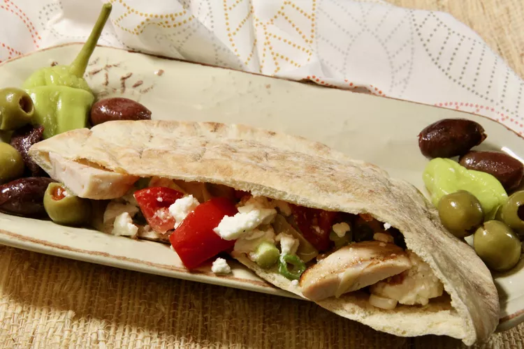

Mediterranean Chicken Pitas

Description:
A perfect way to use leftover chicken breasts
in these amazing Mediterranean-style pita sandwiches,
served with artichokes and feta cheese.
Ingredients:
- 1 cup marinated artichoke hearts, drained and chopped
- ½ cup crumbled feta cheese
- ½ cup thinly sliced green onions
- 1 tablespoon lemon juice
- 1 teaspoon salt
- 1/2 teaspoon ground black pepper
- 2 (6 inch) whole wheat pita breads, split and toasted
- 4 ounces roasted chicken breast, sliced
Cooking:
- Combine artichokes with feta cheese, green onions, lemon juice, salt, and pepper in a bowl.
- Spoon into pita halves.
- Divide chicken slices and add to pita pockets.